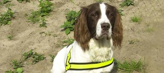
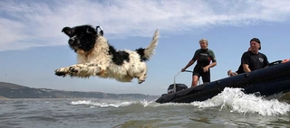
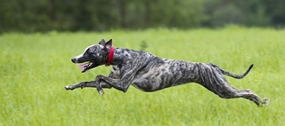

Somethings About the Dog, You Probably Didn't Know.
Dogs are great human-loyalty friends. They are close to us and bring love to us. They are always with us and ready when we need it. However, dogs have many properties that you may not know.

The perception of dogs smells more than we do. Therefore, dogs are often used to sniff for objects such as drugs, people, etc. Many hunting dogs have achieved feats while on missions, such as searching for weapons and explosives. Above is a photo of the 2003 PDSA Dickin Awarded Dog in Iraq for the weapon and explosive dog Buster. Read more stories about hero dogs

Many dogs don't like water, but they swim very well. Some dogs are very good at the underwater rescue. A brave dog that saved nine people on the sea in 2016 is called Whizz. He received the PDSA Order of Merit award after that. Find more at Animal OBE for life-saving Newfoundland

Dogs can reach a speed of 45mph in seconds. Find more information on how dogs can run fast at Greyhound. Can dogs beat a cheetah, or else we need to find out more. The Cheetah can run as fast as 70mph in 30 seconds. At a speed of 35mph for 7 miles, the dog will pass Cheetah's speed in a short time.
| 1. | Proper nutrition |
| 2. | Exercise |
| 3. | Regular checkups |
| 4. | Preventative medications |
| 5. | Grooming |
| 6. | Affection |
| 7. | ... |